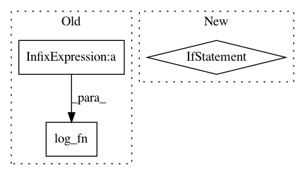

4a692df825394a9beda17b7f087427654fbe2351,tmtoolkit/bow/bow_stats.py,,tf_log,#Any#Any#,181
Before Change
if issparse(dtm):
dtm = dtm.toarray()
return log_fn(dtm + 1)
def tf_double_norm(dtm, K=0.5):
After Change
if dtm.ndim != 2:
raise ValueError("`dtm` must be a 2D array/matrix")
if log_fn is np.log1p:
if issparse(dtm):
return dtm.log1p()
else:
return log_fn(dtm)
else:
if issparse(dtm):
dtm = dtm.toarray()
return log_fn(dtm)
def tf_double_norm(dtm, K=0.5):
Transform raw count document-term-matrix `dtm` to double-normalized term frequency matrix
`K + (1-K) * dtm / max{t in doc}`, where `max{t in doc}` is vector of size N containing the maximum term count per
In pattern: SUPERPATTERN
Frequency: 3
Non-data size: 3
Instances
Project Name: WZBSocialScienceCenter/tmtoolkit
Commit Name: 4a692df825394a9beda17b7f087427654fbe2351
Time: 2019-06-20
Author: markus.konrad@wzb.eu
File Name: tmtoolkit/bow/bow_stats.py
Class Name:
Method Name: tf_log
Project Name: tensorflow/benchmarks
Commit Name: 9a20838a7af123340df65b2177b26eb7f8cab316
Time: 2017-06-02
Author: annarev@google.com
File Name: scripts/tf_cnn_benchmarks/tf_cnn_benchmarks.py
Class Name: BenchmarkCNN
Method Name: _benchmark_cnn
Project Name: tensorflow/benchmarks
Commit Name: 21d5d9ff18e2ebb034e95871e311e5232bbf1826
Time: 2017-06-02
Author: annarev@google.com
File Name: scripts/tf_cnn_benchmarks/tf_cnn_benchmarks.py
Class Name: BenchmarkCNN
Method Name: _benchmark_cnn